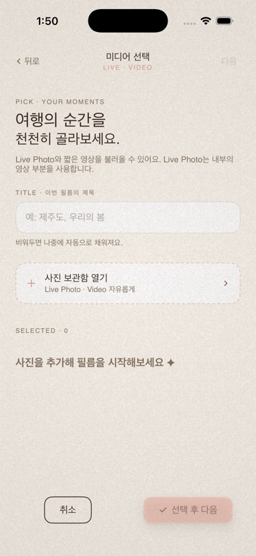

Bottom Buttons Design Review
Date: 2026-05-05

Lazyweb Status
The Lazyweb design-improve workflow was used locally. The current session does not expose the required Lazyweb MCP tools, so this review could not perform live Lazyweb screenshot search/comparison.
Findings
1. MediaPicker bottom buttons are not visually distributed like a bottom action bar
The current accessibility/simulator state shows intrinsic button widths rather than equal bottom-action distribution: 취소 is about 73.7×44 and 선택 후 다음 is about 140.3×44. The hit areas are valid, but the layout reads like two small floating controls.
2. Export completion has duplicate navigation outcomes
다른 영상 만들기 and 홈으로 → both call router.popToRoot(), despite implying different outcomes.
3. Timeline delete is safer now, but still visually equivalent to non-destructive tools
The confirmation dialog is good, but 삭제 still has the same visual weight as non-destructive edit actions.
Good Signals
- Bottom controls now have 44pt hit areas.
- Disabled MediaPicker CTA is correctly disabled in accessibility.
- Dimmed edit toolbar is no longer interactive/focusable during playback.
- Primary coral button text now uses ink for better contrast.